Splitting points into blocks#
Beyond generating values for coordinates, Bordado can also operate on them in a few useful ways. One category of this is splitting points spatially by segmenting them into blocks or windows. Functions bordado.block_split, bordado.expanding_window, bordado.rolling_window, and bordado.rolling_window_spherical are designed for this. This tutorial will teach you how to use them.
import bordado as bd
import numpy as np
import matplotlib.pyplot as plt
import pygmt
See also
We’ll use random data in these examples
generated by bordado.random_coordinates and
bordado.random_coordinates_spherical. See
“Random coordinates” to learn how to use them.
All of these segmentation functions generate arrays that can be used to index the coordinate arrays instead of actually doing any of the indexing themselves. This makes them more flexible to combine with other spatial operations that you may need.
Non-overlapping spatial blocks#
Bordado has function bordado.block_split that can provide indices for
segmenting coordinate arrays according to spatial blocks.
For this example, let’s make some random coordinates with
bordado.random_coordinates:
region = (20, 30, -50, -42)
coordinates = bd.random_coordinates(region, size=500, random_seed=42)
fig, ax = plt.subplots(1, 1, figsize=(8, 6), layout="constrained")
ax.plot(*coordinates, ".")
ax.set_aspect("equal")
ax.set_xlim(*region[:2])
ax.set_ylim(*region[2:])
ax.set_xlabel("Easting")
ax.set_ylabel("Northing")
ax.grid()
plt.show()
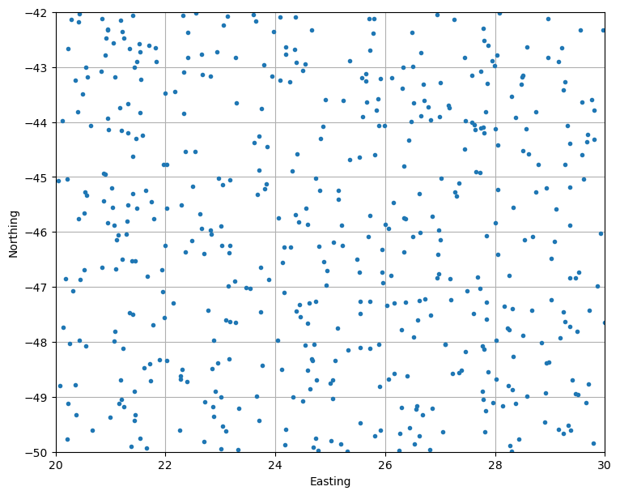
Then we can use block_split to get the indexers that split
these points into evenly sized blocks:
block_coordinates, labels = bd.block_split(coordinates, block_size=2)
print(labels)
[13 17 19 13 10 19 8 18 5 2 1 19 3 9 7 1 7 10 4 18 18 6 4 14
3 5 17 15 15 8 13 14 6 11 2 0 10 2 1 18 17 14 18 16 4 9 6 1
18 5 5 0 3 18 3 3 7 7 10 5 3 2 17 13 13 12 17 1 5 12 6 17
9 16 15 11 16 13 17 8 8 12 4 5 15 10 3 7 0 2 15 8 7 11 1 8
11 10 15 14 9 18 16 14 18 18 17 1 10 9 12 10 16 17 5 14 18 8 2 3
17 8 15 7 15 7 16 0 10 17 15 19 2 6 2 0 14 12 18 15 12 17 4 2
12 16 1 12 12 0 9 19 10 2 15 8 16 8 13 8 5 19 1 0 7 11 19 19
6 9 1 12 16 14 10 5 17 9 4 8 4 4 2 6 13 8 6 15 18 11 9 16
0 9 15 10 12 14 10 6 3 9 2 15 5 11 15 18 5 7 18 12 15 19 18 3
10 0 14 16 11 7 3 19 1 4 0 2 8 10 5 2 4 7 4 14 2 8 5 5
4 3 16 2 13 9 8 7 16 17 8 9 2 6 11 3 9 15 0 7 10 4 1 0
19 0 1 0 0 10 0 10 10 17 3 16 11 2 19 19 5 15 6 11 17 7 15 6
17 10 4 5 9 0 4 9 4 4 13 13 13 5 17 12 4 2 11 3 11 15 2 2
16 11 1 16 16 13 11 9 4 12 6 12 19 3 14 2 18 6 13 10 8 14 10 13
15 18 5 14 0 19 14 7 3 18 9 11 2 15 3 0 17 17 2 7 13 18 7 12
14 10 15 10 3 17 18 18 1 4 13 1 16 6 10 15 9 7 11 13 7 14 18 7
1 9 8 4 0 14 8 15 2 3 15 17 9 1 2 12 6 9 3 5 19 14 6 4
5 9 18 18 15 19 15 16 0 3 5 14 3 15 10 10 3 9 1 19 10 14 9 8
8 19 15 0 15 2 18 3 9 15 3 5 6 3 14 18 15 8 10 4 3 0 15 15
19 12 8 13 12 5 4 1 17 8 18 4 10 2 7 2 0 15 6 11 7 8 13 2
17 16 12 6 0 17 7 1 7 17 13 18 18 1 18 7 12 3 16 7]
The labels are the number of the block to which each point belongs. For example, these are the coordinates of the points that fall inside block 1:
block1 = tuple(c[labels == 1] for c in coordinates)
print("Coordinates of block 1:")
for i, c in enumerate(block1):
print(f"coordinate {i}:\n{c}\n")
Coordinates of block 1:
coordinate 0:
[23.70798024 22.27238722 22.26909349 22.88328104 23.03950098 23.01512089
22.72241562 23.31568997 22.30213991 22.90917838 22.86446227 23.10334674
22.84720082 23.6639245 23.33637758 22.70534941 23.76359473 22.95359025
22.38552821 23.01342633 22.25592868 23.16214152]
coordinate 1:
[-49.42352682 -48.61604444 -48.67274506 -49.35960573 -49.53513215
-49.94148435 -49.08716743 -49.963999 -48.49925054 -48.90542978
-49.17597853 -49.62100784 -48.4934242 -48.9847202 -49.20110018
-49.81487924 -48.42606255 -48.38329519 -48.7175038 -48.99468918
-49.59914648 -48.30436311]
The block_coordinates is a tuple with the coordinates of the center of each
block:
for c in block_coordinates:
print(f"block coordinate {i}:\n{c}\n")
block coordinate 1:
[[21.04797324 23.03532303 25.02267282 27.01002262 28.99737241]
[21.04797324 23.03532303 25.02267282 27.01002262 28.99737241]
[21.04797324 23.03532303 25.02267282 27.01002262 28.99737241]
[21.04797324 23.03532303 25.02267282 27.01002262 28.99737241]]
block coordinate 1:
[[-48.99262519 -48.99262519 -48.99262519 -48.99262519 -48.99262519]
[-46.99760458 -46.99760458 -46.99760458 -46.99760458 -46.99760458]
[-45.00258396 -45.00258396 -45.00258396 -45.00258396 -45.00258396]
[-43.00756335 -43.00756335 -43.00756335 -43.00756335 -43.00756335]]
Tip
The keen-eyed among you might have noticed that the coordinates of the block
centers are not spaced by 2 (the block size). This is because by default
block_split extracts the region that is divided into blocks
from the input data, which are random and there are no points exactly on the
region boundaries. You can pass a region argument to make this be exact
or pass adjust="region"" to keep the block size fixed even if the region
is not passed.
Let’s use matplotlib to plot this so we can understand it better.
We’ll plot the block centers as stars and a scatter of the points colored
according to which block they belong:
fig, ax = plt.subplots(1, 1, figsize=(8, 8), layout="constrained")
ax.plot(*block_coordinates, "k*", markersize=10)
tmp = ax.scatter(*coordinates, c=labels, cmap="tab20")
cb_region = (-0.5, 0.5 + labels.max())
fig.colorbar(
tmp,
label="Block number",
orientation="horizontal",
aspect=30,
boundaries=bd.line_coordinates(*cb_region, spacing=1),
values=bd.line_coordinates(*cb_region, spacing=1, pixel_register=True),
ticks=bd.line_coordinates(*cb_region, spacing=1, pixel_register=True),
)
ax.set_aspect("equal")
ax.set_xlim(*region[:2])
ax.set_ylim(*region[2:])
ax.set_xlabel("Easting")
ax.set_ylabel("Northing")
plt.show()
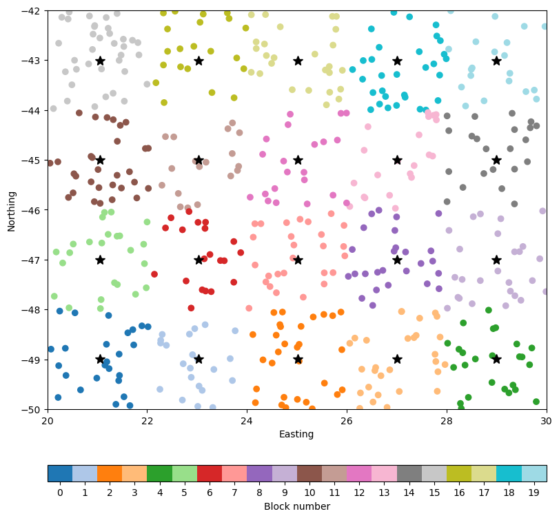
The indexing is useful for calculating things like block means and other statistics. For example, we find out the number of points in each block like so:
points_per_block = [coordinates[0][labels == i].size for i in range(labels.max() + 1)]
print(points_per_block)
[25, 22, 30, 29, 25, 24, 20, 27, 26, 26, 30, 18, 21, 21, 22, 36, 21, 26, 31, 20]
Splitting into overlapping windows#
In case we split points into blocks, but we want the blocks to overlap, the
operation is called a rolling window. Bordado implements this operation in
function bordado.rolling_window.
This is how we use it in the dataset we generated above with windows of size 4
and with a 50% overlap between adjacent windows:
window_coordinates, indices = bd.rolling_window(
coordinates, window_size=4, overlap=0.5,
)
The window_coordinates is a tuple of coordinate arrays corresponding to the
center of each window. It will have the same number of arrays as coordinates
and works in any number of dimensions.
for c in window_coordinates:
print(f"window coordinate {i}:\n{c}\n")
window coordinate 1:
[[22.05429834 24.03321466 26.01213098 27.9910473 ]
[22.05429834 24.03321466 26.01213098 27.9910473 ]
[22.05429834 24.03321466 26.01213098 27.9910473 ]]
window coordinate 1:
[[-47.9901355 -47.9901355 -47.9901355 -47.9901355 ]
[-46.00009427 -46.00009427 -46.00009427 -46.00009427]
[-44.01005304 -44.01005304 -44.01005304 -44.01005304]]
Hint
Notice that the window size is adjusted here as well to fit the region
of the points. To prevent this from happening, either pass a region or
adjust="region" to rolling_window.
Like the block_coordinates above, the arrays have the number of dimensions
of the input coordinates (in this case, 2D).
The indices are a bit more complex than the labels from block_split. They are an array with the same shape as the window_coordinates:
print(window_coordinates[0].shape)
print(indices.shape)
(3, 4)
(3, 4)
Each element of the indices array corresponds to a window and is an index for selecting points that fall inside that window. For example, this is the index for the first window:
print(indices[0, 0])
(array([ 8, 10, 15, 21, 25, 32, 35, 38, 46, 47, 49, 50, 51,
59, 67, 68, 70, 83, 88, 94, 107, 114, 127, 133, 135, 146,
149, 160, 162, 163, 168, 170, 175, 183, 186, 192, 199, 204, 208,
217, 224, 226, 230, 238, 239, 253, 258, 262, 263, 265, 266, 267,
268, 270, 280, 282, 287, 291, 293, 301, 314, 322, 329, 338, 340,
351, 368, 371, 373, 384, 388, 397, 400, 403, 406, 408, 416, 418,
426, 435, 443, 444, 453, 461, 463, 470, 472, 474, 483, 484, 487,
493]),)
Tip
Notice that it’s a tuple with one index array. This is because our
coordinates are 1D arrays. If they were 2D arrays (for example, if they
were a regular grid), then indices[0, 0] would be a tuple with 2 index
arrays.
We can select the points that fall inside the first window like so:
window = [c[indices[0, 0]] for c in coordinates]
print("Coordinates of window 0, 0:")
for i, c in enumerate(window):
print(f"coordinate {i}:\n{c}\n")
Coordinates of window 0, 0:
coordinate 0:
[21.28113633 23.70798024 22.27238722 23.54525968 21.94638708 23.25825358
21.89471359 22.26909349 23.87478379 22.88328104 21.39752484 21.99908202
20.0736227 21.14530074 23.03950098 20.30817835 22.14584673 21.6697292
21.61271779 23.01512089 22.72241562 21.76772783 21.44524189 23.46869805
20.22803871 23.31568997 20.2161208 21.07740946 22.30213991 20.37412556
23.17138893 22.90917838 20.44910619 23.15929052 23.73657729 21.22757932
23.10323673 20.13936288 21.21832505 21.23753804 22.86446227 20.24859491
21.40339597 20.17836784 21.09143997 22.47839563 20.66558857 23.10334674
21.43871933 21.65531723 22.84720082 21.53613395 21.15490064 20.55395409
20.43475062 22.36744871 23.73614138 20.51961866 20.99113142 21.34552208
23.6639245 23.28361205 22.88155614 20.84493219 21.3740793 21.71291304
23.33637758 22.70534941 23.1443998 23.76359473 21.18478577 22.95359025
23.01927391 21.10588411 22.83908438 21.06419532 21.43021875 21.98204227
22.38552821 22.01782111 21.93041491 22.70758751 21.73127846 21.45130255
23.01342633 24.04034391 21.19217526 22.78075546 23.17040911 20.36059834
22.25592868 23.16214152]
coordinate 1:
[-46.04686683 -49.42352682 -48.61604444 -47.02190741 -47.08064511
-46.89726644 -48.32753873 -48.67274506 -46.85941827 -49.35960573
-46.52976778 -46.24538453 -48.79461621 -46.05368019 -49.53513215
-47.06713292 -47.29234813 -46.81157995 -48.46717592 -49.94148435
-49.08716743 -47.69417404 -49.32144582 -47.01838127 -49.12574167
-49.963999 -49.76314169 -47.80139959 -48.49925054 -49.32150727
-47.62910354 -48.90542978 -46.86104726 -46.37376067 -46.63694583
-48.11922306 -47.60493367 -47.73402453 -46.49290993 -49.18484674
-49.17597853 -48.03146711 -47.49944041 -46.84699378 -46.66712294
-46.1610928 -49.61144568 -49.62100784 -48.89435703 -49.92592175
-48.4934242 -49.7497319 -49.11496426 -48.06688873 -47.96589213
-46.36434056 -47.45280706 -46.68779125 -49.37513286 -47.46277463
-48.9847202 -47.64195845 -47.97068395 -46.6458209 -49.90024098
-48.40366406 -49.20110018 -49.81487924 -46.98284256 -48.42606255
-48.697028 -48.38329519 -46.25266687 -46.14806928 -46.03594755
-47.98050968 -49.42542288 -47.56426779 -48.7175038 -48.34549178
-46.69145655 -46.4011256 -48.7099675 -46.52349532 -48.99468918
-47.97452315 -49.04837351 -47.42773607 -46.24992562 -48.77698302
-49.59914648 -48.30436311]
And then we can plot the window centers and the points of the first window:
fig, ax = plt.subplots(1, 1, figsize=(8, 7), layout="constrained")
ax.plot(*window, ".")
ax.plot(*window_coordinates, "k*", markersize=10)
ax.set_aspect("equal")
ax.set_xlim(*region[:2])
ax.set_ylim(*region[2:])
ax.set_xlabel("easting")
ax.set_ylabel("northing")
plt.show()
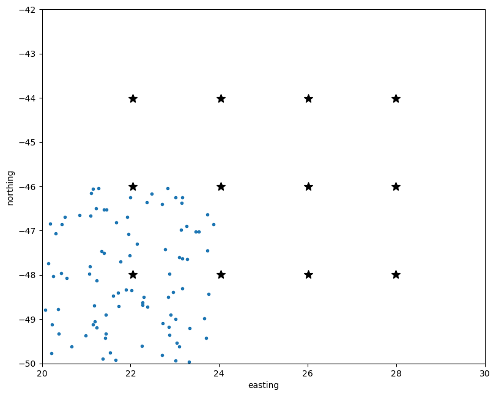
We can do this for other windows as well, like the one to the right of 0, 0:
window = [c[indices[0, 1]] for c in coordinates]
fig, ax = plt.subplots(1, 1, figsize=(8, 7), layout="constrained")
ax.plot(*window, ".")
ax.plot(*window_coordinates, "k*", markersize=10)
ax.set_aspect("equal")
ax.set_xlim(*region[:2])
ax.set_ylim(*region[2:])
ax.set_xlabel("Easting")
ax.set_ylabel("Northing")
plt.show()
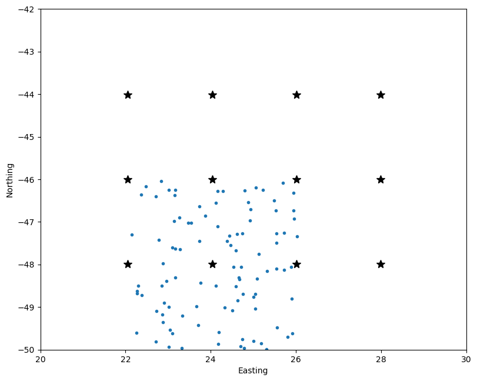
Notice that there is overlap and 50% (the chosen overlap) of the points
belong to both windows.
Rolling windows on the sphere#
The rolling window strategy won’t work well for geographic data since windows
will get smaller and smaller towards the poles because of the convergence of
meridians.
To demonstrate this, let’s first make some random points that are uniformly distributed on the sphere with bordado.random_coordinates_spherical:
region = (0, 360, -90, 90) # W, E, S, N in degrees
coordinates = bd.random_coordinates_spherical(region, size=3000)
fig = pygmt.Figure()
fig.coast(land="#cccccc", region="g", projection="W0/20c", frame="afg")
fig.plot(x=coordinates[0], y=coordinates[1], style="c0.1c", fill="seagreen")
fig.show()
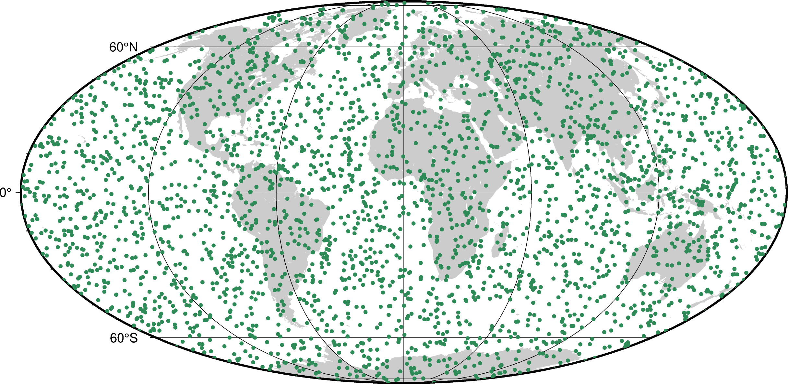
Now, we’ll split them into 30° windows with 50% overlap using the standard
rolling_window and plot the window centers:
window_coordinates, indices = bd.rolling_window(
coordinates, window_size=30, overlap=0.5,
)
fig = pygmt.Figure()
fig.coast(land="#cccccc", region="g", projection="W0/20c", frame="afg")
fig.plot(
x=window_coordinates[0].ravel(),
y=window_coordinates[1].ravel(),
style="a0.3c",
fill="orange",
)
fig.show()
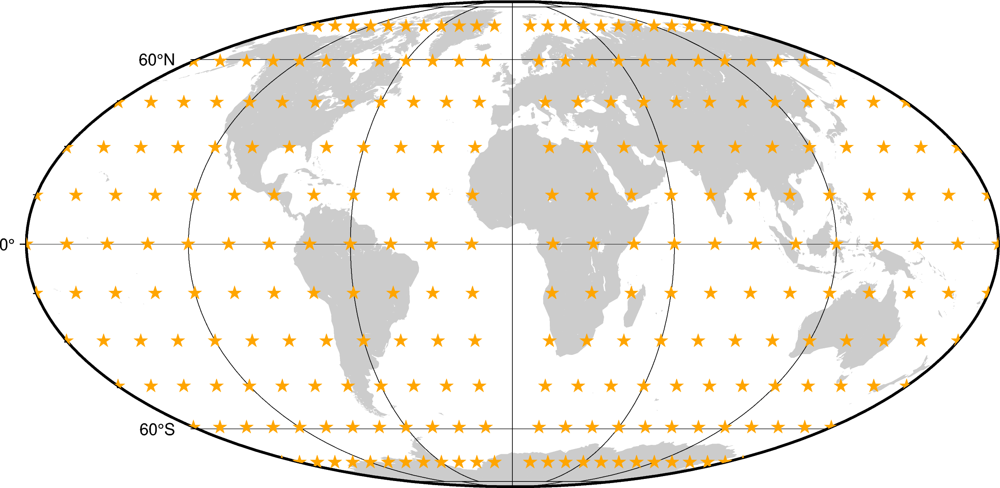
The window centers get closer as windows get smaller towards the poles. This can be a problem since windows towards the equator will likely contain more points, skewing any statistics or other math done on the data inside windows. There is also a gap at the 360° - 0° boundary since the function doesn’t know that it’s a periodic boundary.
We can show this by calculating the number of points inside each window and plotting that as a function of the window center latitude:
points_per_window = [coordinates[0][i].size for i in indices.ravel()]
window_latitude = window_coordinates[1].ravel()
fig, ax = plt.subplots(1, 1, figsize=(8, 5), layout="constrained")
ax.plot(window_latitude, points_per_window, ".")
ax.set_xlabel("Window latitude")
ax.set_ylabel("Points per window")
ax.grid()
plt.show()
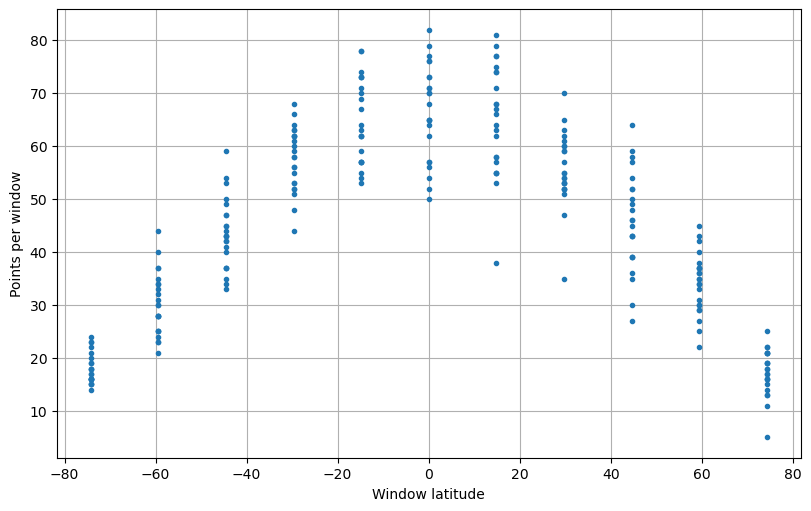
It’s clear from the plot above that there are fewer points inside windows at the poles, even though the distribution of points is uniform.
To get around this, use bordado.rolling_window_spherical:
window_coordinates, indices = bd.rolling_window_spherical(
coordinates, window_size=30, overlap=0.5,
)
fig = pygmt.Figure()
fig.coast(land="#cccccc", region="g", projection="W0/20c", frame="afg")
fig.plot(
x=window_coordinates[0].ravel(),
y=window_coordinates[1].ravel(),
style="a0.3c",
fill="orange",
)
ax.set_title("Standard rolling windows")
fig.show()
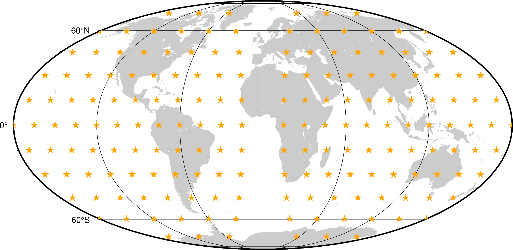
Tip
The windows now don’t have a fixed 30° x 30° size to compensate for the
convergence of the meridians. This means that the window_size argument of
rolling_window_spherical refers to the latitudinal size of
the windows. The longitudinal size will vary depending on the latitude band
of the window.
In this case, the window centers don’t get closer towards the poles. But there
is still the 360° - 0° gap. This happens because the region isn’t exactly
360° in longitude and so the code doesn’t know that it should wrap around the
globe. To get around this, we can specify the region argument with the full
range:
window_coordinates, indices = bd.rolling_window_spherical(
coordinates, window_size=30, overlap=0.5, region=(0, 360, -90, 90),
)
fig = pygmt.Figure()
fig.coast(land="#cccccc", region="g", projection="W0/20c", frame="afg")
fig.plot(
x=window_coordinates[0].ravel(),
y=window_coordinates[1].ravel(),
style="a0.3c",
fill="orange",
)
fig.show()
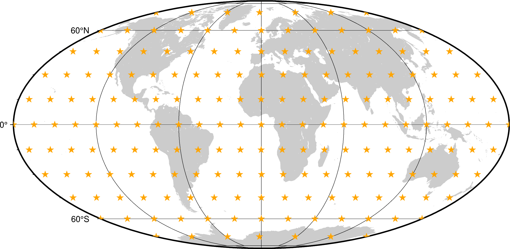
This time, since the window centers aren’t on a regular grid anymore, both the
window_coordinates and indices are 1D arrays:
print(f"Coordinate shapes:", end=" ")
for c in window_coordinates:
print(c.shape, end=" ")
print("\nIndices shape:", indices.shape)
Coordinate shapes: (182,) (182,)
Indices shape: (182,)
Let’s plot the points from some of the windows:
window = [c[indices[0]] for c in coordinates]
fig = pygmt.Figure()
fig.coast(land="#cccccc", region="g", projection="W0/20c", frame="afg")
fig.plot(
x=window[0].ravel(), y=window[1].ravel(), style="c0.1c", fill="seagreen",
)
fig.plot(
x=window_coordinates[0].ravel(),
y=window_coordinates[1].ravel(),
style="a0.3c",
fill="orange",
)
fig.show()
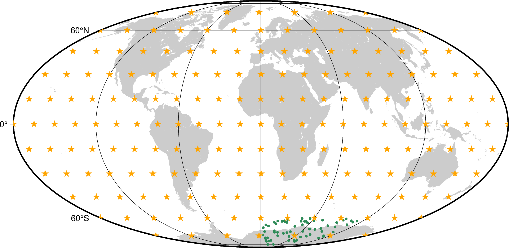
window = [c[indices[5]] for c in coordinates]
fig = pygmt.Figure()
fig.coast(land="#cccccc", region="g", projection="W0/20c", frame="afg")
fig.plot(
x=window[0].ravel(), y=window[1].ravel(), style="c0.1c", fill="seagreen",
)
fig.plot(
x=window_coordinates[0].ravel(),
y=window_coordinates[1].ravel(),
style="a0.3c",
fill="orange",
)
fig.show()
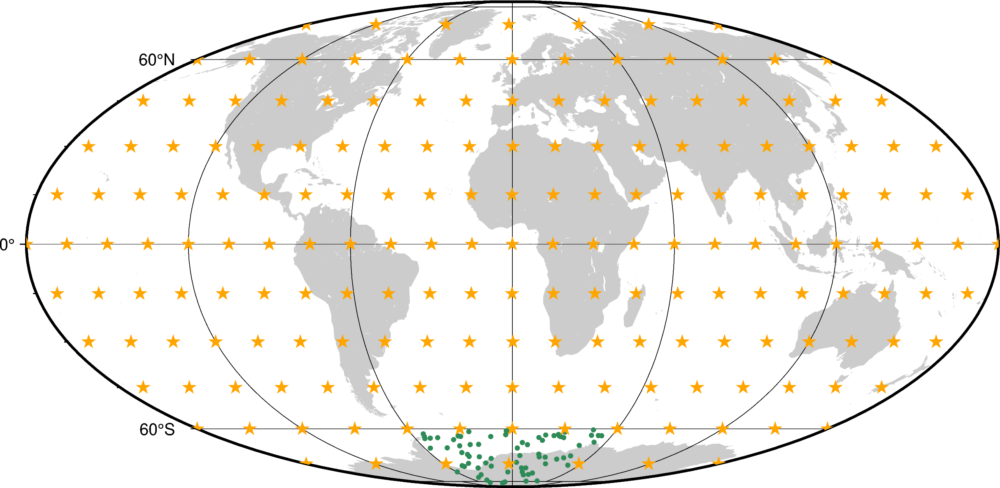
Note
Notice that there is an overlap between the two windows plotted above that crosses the 360° - 0° line.
Making the same points per window calculation as before, we can check if it actually works:
points_per_window_spherical = [coordinates[0][i].size for i in indices.ravel()]
window_latitude_spherical = window_coordinates[1].ravel()
fig, ax = plt.subplots(1, 1, figsize=(8, 5), layout="constrained")
ax.plot(window_latitude, points_per_window, ".", label="Regular")
ax.plot(window_latitude_spherical, points_per_window_spherical, "*", label="Spherical")
ax.legend()
ax.set_xlabel("Window latitude")
ax.set_ylabel("Points per window")
ax.grid()
plt.show()
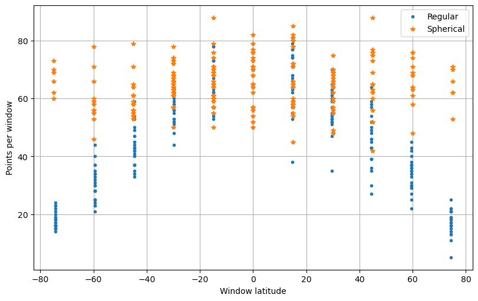
Now the distribution is much more uniform!
What’s next#
With this, we’ve finished our tutorial! To learn more about Bordado, take a look at the detailed documentation for each function in “List of functions and classes (API)”.
Please remember to cite Bordado if you use it in a publication, thesis, report, etc. It helps us justify the effort that goes into making this package.
Have questions?
Please ask on any of the Fatiando a Terra community channels!